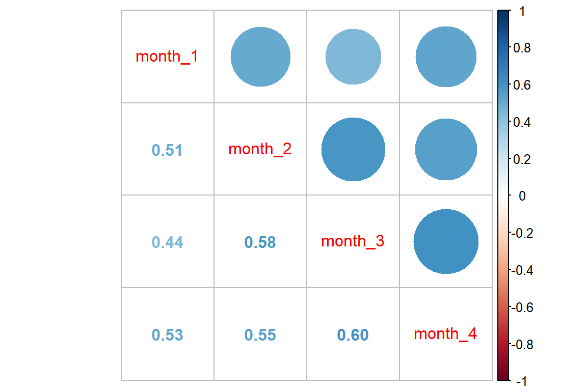
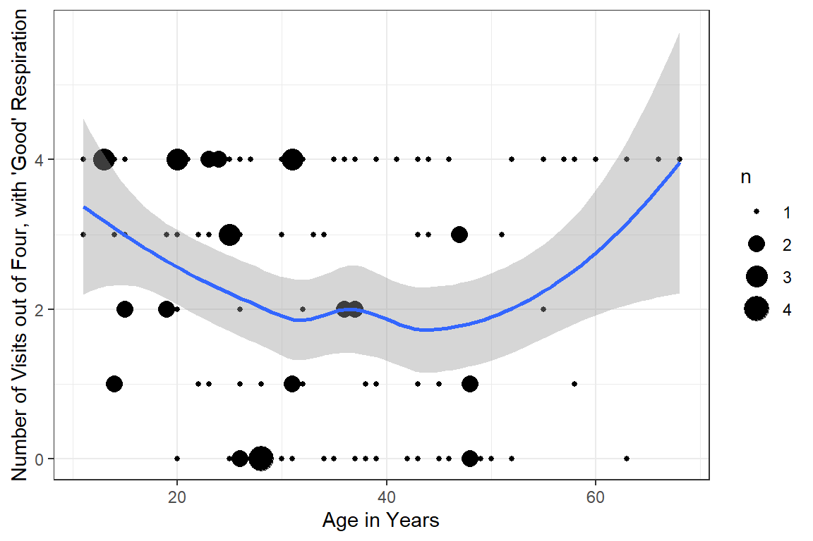

16 GLMM, Binary Outcome: Antibiotics for Leprosy
16.1 Packages
16.1.1 CRAN
library(tidyverse) # all things tidy
library(pander) # nice looking genderal tabulations
library(furniture) # nice table1() descriptives
library(texreg) # Convert Regression Output to LaTeX or HTML Tables
library(psych) # contains some useful functions, like headTail
library(lme4) # Linear, generalized linear, & nonlinear mixed models
library(effects) # Plotting estimated marginal means
library(optimx) # Unify and streamline optimization capabilities in R16.1.2 GitHub
Helper extract functions for exponentiating parameters form generalized regression models within a texreg table of model parameters.
# install.packages("devtools")
# library(devtools)
# install_github("SarBearSchwartz/texreghelpr")
library(texreghelpr)16.2 Prepare and get to know the dataset
Data on Amenorrhea from Clinical Trial of Contracepting Women.
Source:
Table 1 (page 168) of Machin et al. (1988). With permission of Elsevier.
Reference:
Machin D, Farley T, Busca B, Campbell M and d’Arcangues C. (1988). Assessing changes in vaginal bleeding patterns in contracepting women. Contraception, 38, 165-179.
Description:
The data are from a longitudinal clinical trial of contracepting women. In this trial women received an injection of either 100 mg or 150 mg of depot-medroxyprogesterone acetate (DMPA) on the day of randomization and three additional injections at 90-day intervals. There was a final follow-up visit 90 days after the fourth injection, i.e., one year after the first injection. Throughout the study each woman completed a menstrual diary that recorded any vaginal bleeding pattern disturbances. The diary data were used to determine whether a women experienced amenorrhea, the absence of menstrual bleeding for a specified number of days. A total of 1151 women completed the menstrual diaries and the diary data were used to generate a binary sequence for each woman according to whether or not she had experienced amenorrhea in the four successive three month intervals.
In clinical trials of modern hormonal contraceptives, pregnancy is exceedingly rare (and would be regarded as a failure of the contraceptive method), and is not the main outcome of interest in this study. Instead, the outcome of interest is a binary response indicating whether a woman experienced amenorrhea in the four successive three month intervals. A feature of this clinical trial is that there was substantial dropout. More than one third of the women dropped out before the completion of the trial.
Variable List:
Indicators
idparticipant identificationoccasiondenotes the four 90-day periods
Outcome or dependent variable
amenorrheaAmenorrhea Status: 1=Amenorrhea, 0=No Amenorrhea
Main predictor or independent variable of interest
dose0 = Low (100 mg), 1 = High (150 mg)
16.2.1 Read in the data
data_raw <- read.table("https://raw.githubusercontent.com/CEHS-research/data/master/MLM/RCTcontraception.txt", header=TRUE)
str(data_raw)'data.frame': 4604 obs. of 4 variables:
$ id : int 1 1 1 1 2 2 2 2 3 3 ...
$ dose : int 0 0 0 0 0 0 0 0 0 0 ...
$ occasion : int 1 2 3 4 1 2 3 4 1 2 ...
$ amenorrhea: Factor w/ 3 levels ".","0","1": 2 1 1 1 2 1 1 1 2 1 ...psych::headTail(data_raw, top = 10) id dose occasion amenorrhea
1 1 0 1 0
2 1 0 2 .
3 1 0 3 .
4 1 0 4 .
5 2 0 1 0
6 2 0 2 .
7 2 0 3 .
8 2 0 4 .
9 3 0 1 0
10 3 0 2 .
... ... ... ... <NA>
4601 1151 1 1 1
4602 1151 1 2 1
4603 1151 1 3 1
4604 1151 1 4 116.2.2 Long Format
data_long <- data_raw %>%
dplyr::mutate(id = factor(id)) %>%
dplyr::mutate(dose = factor(dose,
levels = c("0", "1"),
labels = c("Low", "High"))) %>%
dplyr::mutate(time = occasion - 1) %>%
dplyr::mutate(amenorrhea = amenorrhea %>% # outcome needs to be numeric
as.character() %>%
as.numeric()) %>%
dplyr::filter(complete.cases(amenorrhea)) %>% # dump missing occations
dplyr::arrange(id, time)
str(data_long)'data.frame': 3616 obs. of 5 variables:
$ id : Factor w/ 1151 levels "1","2","3","4",..: 1 2 3 4 5 6 7 8 9 10 ...
$ dose : Factor w/ 2 levels "Low","High": 1 1 1 1 1 1 1 1 1 1 ...
$ occasion : int 1 1 1 1 1 1 1 1 1 1 ...
$ amenorrhea: num 0 0 0 0 0 0 0 0 0 0 ...
$ time : num 0 0 0 0 0 0 0 0 0 0 ...psych::headTail(data_long, bottom = 10) id dose occasion amenorrhea time
1 1 Low 1 0 0
2 2 Low 1 0 0
3 3 Low 1 0 0
4 4 Low 1 0 0
... <NA> <NA> ... ... ...
3607 1149 High 3 1 2
3608 1149 High 4 1 3
3609 1150 High 1 1 0
3610 1150 High 2 1 1
3611 1150 High 3 1 2
3612 1150 High 4 1 3
3613 1151 High 1 1 0
3614 1151 High 2 1 1
3615 1151 High 3 1 2
3616 1151 High 4 1 316.2.3 Wide Format
data_wide <- data_long %>%
dplyr::select(-time) %>%
tidyr::spread(key = occasion,
value = amenorrhea,
sep = "_")
str(data_wide)'data.frame': 1151 obs. of 6 variables:
$ id : Factor w/ 1151 levels "1","2","3","4",..: 1 2 3 4 5 6 7 8 9 10 ...
$ dose : Factor w/ 2 levels "Low","High": 1 1 1 1 1 1 1 1 1 1 ...
$ occasion_1: num 0 0 0 0 0 0 0 0 0 0 ...
$ occasion_2: num NA NA NA NA NA NA NA NA NA NA ...
$ occasion_3: num NA NA NA NA NA NA NA NA NA NA ...
$ occasion_4: num NA NA NA NA NA NA NA NA NA NA ...psych::headTail(data_wide, bottom = 10) id dose occasion_1 occasion_2 occasion_3 occasion_4
1 1 Low 0 <NA> <NA> <NA>
2 2 Low 0 <NA> <NA> <NA>
3 3 Low 0 <NA> <NA> <NA>
4 4 Low 0 <NA> <NA> <NA>
... <NA> <NA> ... ... ... ...
1142 1142 High 1 1 1 1
1143 1143 High 1 1 1 1
1144 1144 High 1 1 1 1
1145 1145 High 1 1 1 1
1146 1146 High 1 1 1 1
1147 1147 High 1 1 1 1
1148 1148 High 1 1 1 1
1149 1149 High 1 1 1 1
1150 1150 High 1 1 1 1
1151 1151 High 1 1 1 116.3 Exploratory Data Analysis
16.3.1 Summary Statistics
data_summary <- data_long %>%
dplyr::group_by(dose, occasion) %>%
dplyr::summarise(N = n(),
M = mean(amenorrhea),
SD = sd(amenorrhea),
SE = SD/sqrt(N))
data_summary# A tibble: 8 x 6
# Groups: dose [?]
dose occasion N M SD SE
<fct> <int> <int> <dbl> <dbl> <dbl>
1 Low 1 576 0.186 0.389 0.0162
2 Low 2 477 0.262 0.440 0.0202
3 Low 3 409 0.389 0.488 0.0241
4 Low 4 361 0.501 0.501 0.0264
5 High 1 575 0.205 0.404 0.0169
6 High 2 476 0.336 0.473 0.0217
7 High 3 389 0.494 0.501 0.0254
8 High 4 353 0.535 0.499 0.026616.3.2 Visualize
data_summary %>%
ggplot(aes(x = occasion,
y = M,
fill = dose)) +
geom_col(position = "dodge") +
theme_bw() +
theme(legend.position = c(0, 1),
legend.justification = c(-0.1, 1.1),
legend.background = element_rect(color = "black"),
legend.key.width = unit(1.5, "cm")) +
labs(x = "90-day windows",
y = "Observed Proportion of Amenorrhea",
fill = "Dosage") +
scale_x_continuous(breaks = 1:4,
labels = c("First",
"Second",
"Third",
"Fourth"))
data_summary %>%
ggplot(aes(x = occasion,
y = M,
color = dose %>% fct_rev())) +
geom_errorbar(aes(ymin = M - SE,
ymax = M + SE),
width = .3,
position = position_dodge(width = .25)) +
geom_point(position = position_dodge(width = .25)) +
geom_line(position = position_dodge(width = .25)) +
theme_bw() +
theme(legend.position = c(0, 1),
legend.justification = c(-0.1, 1.1),
legend.background = element_rect(color = "black"),
legend.key.width = unit(1.5, "cm")) +
labs(x = "90-day windows",
y = "Observed Proportion of Amenorrhea",
color = "Dosage") +
scale_x_continuous(breaks = 1:4,
labels = c("First",
"Second",
"Third",
"Fourth"))
16.4 Generalized Linear Mixed Effects Models (GLMM) - Basic
16.4.1 Fit Models
fit_1 <- lme4::glmer(amenorrhea ~ time*dose + (1 | id),
data = data_long,
family = binomial(link = "logit"))
fit_2 <- lme4::glmer(amenorrhea ~ time + dose + (1 | id),
data = data_long,
family = binomial(link = "logit"))16.4.1.1 Compare via LRT
Should the interaction be included? No.
anova(fit_1, fit_2)Data: data_long
Models:
fit_2: amenorrhea ~ time + dose + (1 | id)
fit_1: amenorrhea ~ time * dose + (1 | id)
Df AIC BIC logLik deviance Chisq Chi Df Pr(>Chisq)
fit_2 4 3931 3956 -1961 3923
fit_1 5 3932 3963 -1961 3922 0.69 1 0.4116.4.2 Table of Model Parameteres
16.4.2.1 Logit Scale
# Knit to Website: texreg::htmlreg()
# Knit to PDF: texreg::texreg()
# View on Screen: texreg::screenreg()
texreg::htmlreg(list(fit_1, fit_2),
custom.model.names = c("with", "without"),
single.row = TRUE,
caption = "MLM Parameter Estimates: Inclusion of Interaction (SE and p-values)")| with | without | ||
|---|---|---|---|
| (Intercept) | -2.55 (0.17)*** | -2.61 (0.16)*** | |
| time | 0.87 (0.07)*** | 0.91 (0.05)*** | |
| doseHigh | 0.39 (0.21) | 0.50 (0.16)** | |
| time:doseHigh | 0.08 (0.09) | ||
| AIC | 3932.14 | 3930.83 | |
| BIC | 3963.11 | 3955.61 | |
| Log Likelihood | -1961.07 | -1961.42 | |
| Num. obs. | 3616 | 3616 | |
| Num. groups: id | 1151 | 1151 | |
| Var: id (Intercept) | 4.26 | 4.24 | |
| p < 0.001, p < 0.01, p < 0.05 | |||
# Knit to Website: texreg::htmlreg()
# Knit to PDF: texreg::texreg()
# View on Screen: texreg::screenreg()
texreg::htmlreg(list(fit_1, fit_2),
custom.model.names = c("with", "without"),
ci.force = TRUE,
single.row = TRUE,
caption = "MLM Parameter Estimates: Inclusion of Interaction (95% CI's)")| with | without | ||
|---|---|---|---|
| (Intercept) | -2.55 [-2.89; -2.22]* | -2.61 [-2.92; -2.30]* | |
| time | 0.87 [0.74; 1.01]* | 0.91 [0.81; 1.02]* | |
| doseHigh | 0.39 [-0.01; 0.79] | 0.50 [0.17; 0.82]* | |
| time:doseHigh | 0.08 [-0.10; 0.26] | ||
| AIC | 3932.14 | 3930.83 | |
| BIC | 3963.11 | 3955.61 | |
| Log Likelihood | -1961.07 | -1961.42 | |
| Num. obs. | 3616 | 3616 | |
| Num. groups: id | 1151 | 1151 | |
| Var: id (Intercept) | 4.26 | 4.24 | |
| * 0 outside the confidence interval | |||
16.4.2.2 Odds ratio scale
# Knit to Website: texreg::htmlreg()
# Knit to PDF: texreg::texreg()
# View on Screen: texreg::screenreg()
texreg::htmlreg(list(extract_glmer_exp(fit_1),
extract_glmer_exp(fit_2)),
custom.model.names = c("with", "without"),
ci.test = 1,
ci.force = TRUE,
single.row = TRUE,
caption = "MLM Parameter Estimates: Inclusion of Interaction (95% CI's)")| with | without | ||
|---|---|---|---|
| (Intercept) | 0.08 [0.06; 0.11]* | 0.07 [0.05; 0.10]* | |
| time | 2.40 [2.08; 2.75]* | 2.49 [2.24; 2.77]* | |
| doseHigh | 1.48 [0.98; 2.22] | 1.64 [1.19; 2.27]* | |
| time:doseHigh | 1.08 [0.90; 1.30] | ||
| AIC | 3932.14 | 3930.83 | |
| BIC | 3963.11 | 3955.61 | |
| Log Likelihood | -1961.07 | -1961.42 | |
| Num. obs. | 3616 | 3616 | |
| Num. groups: id | 1151 | 1151 | |
| Var: id (Intercept) | 4.26 | 4.24 | |
| * 1 outside the confidence interval | |||
16.4.3 Visualize the Model
16.4.3.1 Scale = Logit
effects::Effect(focal.predictors = c("dose", "time"),
xlevels = list(time = seq(from = 0, to = 3, by = .1)),
mod = fit_2,
transform = NULL) %>%
data.frame %>%
ggplot(aes(x = time,
y = fit)) +
geom_hline(yintercept = 0, # reference line
color = "gray",
size = 1.5) +
geom_ribbon(aes(ymin = fit - se, # Mean +/- 1 SEM
ymax = fit + se,
fill = dose),
alpha = .2) +
geom_line(aes(color = dose),
size = 1.5) +
theme_bw() +
labs(y = "Logit Scale")
16.4.3.2 Scale = Probability
effects::Effect(focal.predictors = c("dose", "time"),
xlevels = list(time = seq(from = 0, to = 3, by = .1)),
mod = fit_2) %>%
data.frame %>%
ggplot(aes(x = time,
y = fit)) +
geom_hline(yintercept = c(0, 0.5, 1), # reference lines
color = "gray",
size = 1.5) +
geom_ribbon(aes(ymin = fit - se,
ymax = fit + se,
fill = dose),
alpha = .2) +
geom_line(aes(color = dose),
size = 1.5) +
theme_bw() +
labs(y = "Predicted Probability")
Remove the error bands:
effects::Effect(focal.predictors = c("dose", "time"),
xlevels = list(time = seq(from = 0, to = 3, by = .1)),
mod = fit_2) %>%
data.frame %>%
ggplot(aes(x = time,
y = fit)) +
geom_hline(yintercept = c(0, 0.5),
color = "gray",
size = 1.5) +
geom_line(aes(linetype = dose),
size = 1) +
theme_bw() +
theme(legend.position = c(0, 1),
legend.justification = c(-0.1, 1.1),
legend.background = element_rect(color = "black"),
legend.key.width = unit(1.5, "cm")) +
labs(x = "90-day Window",
y = "Predicted Probability of Amenorrhea",
linetype = "Dosage:") +
scale_x_continuous(breaks = 0:3,
labels = c("First",
"Second",
"Third",
"Fourth"))
16.5 Generalized Linear Mixed Effects Models (GLMM) - Advanced
From the documentation:
The lme4::glmer() function fits a generalized linear mixed model, which incorporates both fixed-effects parameters and random effects in a linear predictor, via maximum likelihood. The linear predictor is related to the conditional mean of the response through the inverse link function defined in the GLM family.
The expression for the likelihood of a mixed-effects model is an integral over the random effects space. For a linear mixed-effects model (LMM), as fit by lmer, this integral can be evaluated exactly. For a GLMM the integral must be approximated. The most reliable approximation for GLMMs is adaptive Gauss-Hermite quadrature, at present implemented only for models with a single scalar random effect. The nAGQ argument controls the number of nodes in the quadrature formula. A model with a single, scalar random-effects term could reasonably use up to 25 quadrature points per scalar integral.
The lme4::lmerControl() function includes an argument for the optimizer, which is the name of a optimizing function(s). IT is a character vector or list of functions: length 1 for lmer or glmer, possibly length 2 for glmer). The built-in optimizers are Nelder_Mead and bobyqa (from the minqa package). Other minimizing functions are allows (constraints do apply).
Special provisions are made for bobyqa, Nelder_Mead, and optimizers wrapped in the optimx package; to use the optimx optimizers (including L-BFGS-B from base optim and nlminb), pass the method argument to optim in the optCtrl argument (you may also need to load the optimx package manually using library(optimx).
16.5.1 Adaptive Gauss-Hermite Quadrature: Increase the number of quadrature points
nAGQ(integer scalar) the number of points per axis for evaluating the adaptive Gauss-Hermite approximation to the log-likelihood. Defaults to 1, corresponding to the Laplace approximation. Values greater than 1 produce greater accuracy in the evaluation of the log-likelihood at the expense of speed. A value of zero uses a faster but less exact form of parameter estimation for GLMMs by optimizing the random effects and the fixed-effects coefficients in the penalized iteratively reweighted least squares step. (See Details.)
fit_3a <- lme4::glmer(amenorrhea ~ time + I(time^2) + time:dose + I(time^2):dose + (1 | id),
data = data_long,
nAGQ = 50, # increase the number of points
family = binomial)16.5.2 Laplace Approximation: switch to the Nelder_Mead optimizer
fit_3b <- lme4::glmer(amenorrhea ~ time + I(time^2) + time:dose + I(time^2):dose + (1 | id),
data = data_long,
control = glmerControl(optimizer ="Nelder_Mead"),
family = binomial)16.5.3 Laplace Approximation: Switch to the L-BFGS-B method
fit_3c <- lme4::glmer(amenorrhea ~ time + I(time^2) + time:dose + I(time^2):dose + (1 | id),
data = data_long,
control = glmerControl(optimizer ='optimx', optCtrl=list(method='L-BFGS-B')),
family = binomial)16.5.4 Laplace Approximation: Switch to the nlminb method
fit_3d <- lme4::glmer(amenorrhea ~ time + I(time^2) + time:dose + I(time^2):dose + (1 | id),
data = data_long,
control = glmerControl(optimizer ='optimx', optCtrl=list(method='nlminb')),
family = binomial)texreg::htmlreg(list(fit_3a, fit_3b, fit_3c, fit_3d),
custom.model.names = c("nAGQ", "Nelder_Mead",
"L BFGS B", "nlminb"),
caption = "GLMM: Various methods of ML approximation",
digits = 4)| nAGQ | Nelder_Mead | L BFGS B | nlminb | ||
|---|---|---|---|---|---|
| (Intercept) | -2.4829*** | -2.4604*** | -2.4601*** | -2.4604*** | |
| (0.1416) | (0.1397) | (0.1397) | (0.1397) | ||
| time | 0.7714*** | 0.7561*** | 0.7558*** | 0.7561*** | |
| (0.2026) | (0.1985) | (0.1985) | (0.1985) | ||
| I(time^2) | 0.0346 | 0.0340 | 0.0341 | 0.0340 | |
| (0.0667) | (0.0655) | (0.0655) | (0.0655) | ||
| time:doseHigh | 0.8920*** | 0.8861*** | 0.8860*** | 0.8861*** | |
| (0.2574) | (0.2513) | (0.2513) | (0.2513) | ||
| I(time^2):doseHigh | -0.2599** | -0.2579** | -0.2579** | -0.2579** | |
| (0.0895) | (0.0879) | (0.0879) | (0.0879) | ||
| AIC | 3879.4906 | 3925.1127 | 3925.1128 | 3925.1127 | |
| BIC | 3916.6493 | 3962.2715 | 3962.2715 | 3962.2715 | |
| Log Likelihood | -1933.7453 | -1956.5564 | -1956.5564 | -1956.5564 | |
| Num. obs. | 3616 | 3616 | 3616 | 3616 | |
| Num. groups: id | 1151 | 1151 | 1151 | 1151 | |
| Var: id (Intercept) | 5.0794 | 4.3478 | 4.3494 | 4.3479 | |
| p < 0.001, p < 0.01, p < 0.05 | |||||
effects::Effect(focal.predictors = c("dose", "time"),
xlevels = list(time = seq(from = 0, to = 3, by = .1)),
mod = fit_3d) %>%
data.frame %>%
ggplot(aes(x = time,
y = fit)) +
geom_hline(yintercept = c(0, 0.5),
color = "gray",
size = 1.5) +
geom_line(aes(linetype = dose),
size = 1) +
theme_bw() +
theme(legend.position = c(0, 1),
legend.justification = c(-0.1, 1.1),
legend.background = element_rect(color = "black"),
legend.key.width = unit(1.5, "cm")) +
labs(x = "90-day Window",
y = "Predicted Probability of Amenorrhea",
linetype = "Dosage:") +
scale_x_continuous(breaks = 0:3,
labels = c("First",
"Second",
"Third",
"Fourth"))